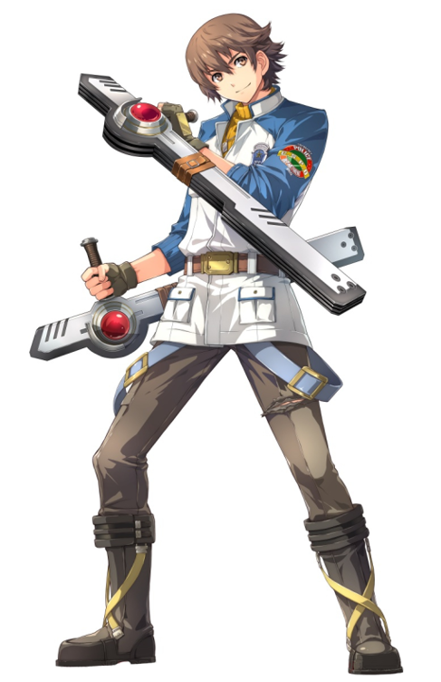

一些零軌的好聽音樂:
主題曲
Get Over The Barrier!
Inevitable Struggle
前言:
在當兵前終於破完軌跡系列啦(偽)，
在這邊我要對觀看這篇心得的老粉絲們說聲抱歉，
我是從零軌一路玩到創軌結束還沒碰過空軌三部曲的人(被打)，
之後有時間我一定會再去把空軌三部曲補完的。
入坑原因:
先說說我拿零之軌跡做為首部軌跡入坑作的原因，
就只是因為網路上大家都推薦啦...開玩笑的，主要原因其實是以「警察」作為主角的遊戲題材對我來說
特別新穎，加上前面所說的網路上大家的各種推坑，因此開啟了我的軌跡之旅，殊不知那時的我還不知道我會深深
的愛上這個系列。
小結論:
這裡我要先講一點小結論目的是為了讓更多軌跡新人入坑(其實是我知道現代人都很懶得看長文章)，
零之軌跡帶給我的並不只是單單的遊戲性而已在劇情、音樂、角色故事的描繪上都有一定水準，
真要說缺點的話大概就是零軌其實有點年代了，那個畫面對現在各種玩慣3A級大作的玩家來說可能無法接受，
但如果你是不在乎畫面太老舊跟回合制Rpg又處於不知道該不該入坑軌跡的玩家，我真的大大推薦你從零軌入坑，
沒玩過前作(空軌)的話也不會有劇情上違和感太重的問題，請安心入坑。
正文開始:
每個人在現實生活中或多或少都一定會遇到困難，而你又是如何去面對這些困難的呢?
----------------以下多少有雷，不怕雷或已經玩完的人再往下翻------------
(緹歐遮蔽圖)
---------------------------------------(遮蔽圖)-----------------------------------------
羅伊德·班寧斯:

先從主角羅伊德講起好了，羅伊德給我的印象就是一個十分認真的青年，具有冷靜看待事件並做出適當決斷的能力，
推理能力與直覺也是一流，善於洞悉與案件相關的一切事物並在最後有條理的推斷案件發生的原因，並擁有不到最後決不放棄的強韌精神力，
講到這裡羅伊德其實就是從裡到外的警察模範，我喜歡羅伊德無論在任何逆境中都會不斷掙扎努力跨越高聳「障壁」的精神，
同樣身處特務支援科(羅伊德的所處單位)的夥伴們也是如此，我認為在支援科中羅伊德是核心也是支持著大家不斷前進的動力，
我很喜歡像羅伊德這樣充滿決斷能力不莽撞從事的角色，雖然在感情方面是個不折不扣的大木頭(但是又很吸引女主角們的關注還被網友們戲稱為羅爺...)，
但羅伊德在我的心目中在零軌中他毫無疑問的就是一個重要的人物。
人物背景:
他想成為警察的原因來自於他的哥哥(蓋伊·班寧斯)，
他的哥哥在某次調查事故中身亡，直到最後都無法查明死因，而蓋伊在生前也是個警察破過了不少案件，
並在當時與亞里歐斯·馬克萊茵(零軌的風之劍聖)兩人被譽為當時最強的警察拍檔，他們倆個破過的案件中最著名的就是
D∴G教團(理念為崇拜惡魔唾棄女神，暗地裡做人口交易並且抓小孩做實驗品的慘無人道組織)的案件，破獲他們的根據地並且在各方的協助下終於一舉殲滅了D∴G教團，
但在這事件破獲後沒多久蓋伊就因某次的調查身亡，在無法查明死因的情況下蓋伊之死的案件就這樣不了了知，
羅伊德在對哥哥的憧憬以及無論如何也想知道哥哥的死因是如何的情況下就這樣成為了警察，在零軌的最後擊敗了D∴G教團殘黨擁有教主頭銜之一的約亞希姆·瓊塔，
保住克洛斯貝爾市倖免於難。